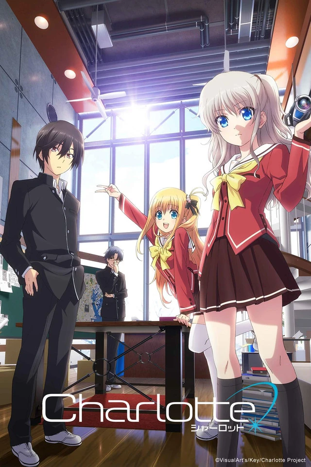

Charlotte (シャーロット, Shārotto) is a Japanese anime television series directed by Yoshiyuki Asai. While P.A. Works and Aniplex are responsible for the animation, the original concept was laid down by Jun Maeda and original character design by Na-Ga, both affiliated with VisualArt's/Key. The anime began airing in Japan on July 4, 2015, and is simulcast by Crunchyroll and Animax Asia in South and Southeast Asia.